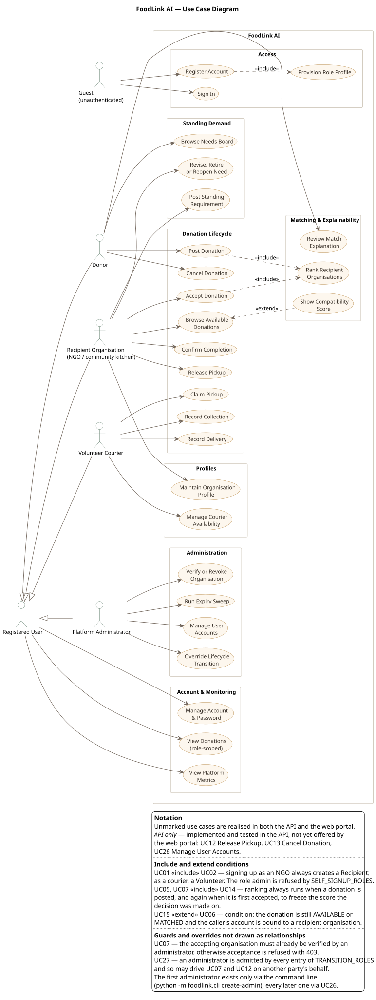
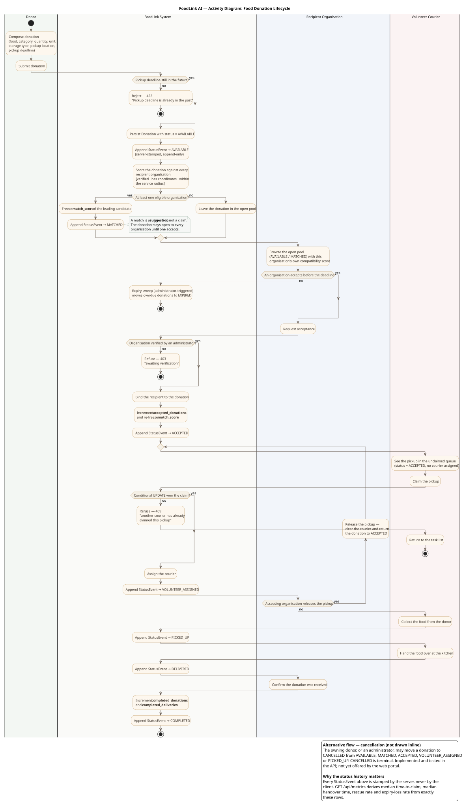
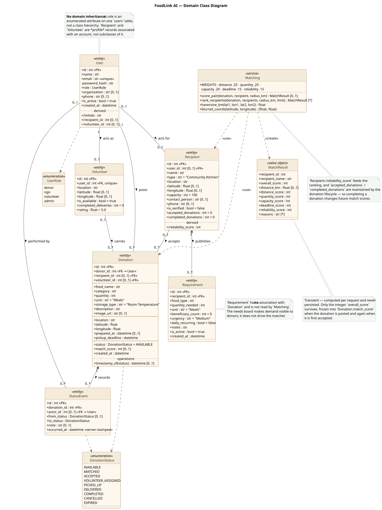

FoodLink AI — UML System Design Documentation
Project: FoodLink AI (repository UCS503P-202627-FoodBridge-AI)
Course: UCS503P — Software Engineering
Artefacts: Use Case Diagram · Use Case Scenarios · Activity Diagram · Class Diagram
1. Purpose and Scope
FoodLink AI is a coordination platform for surplus food redistribution. A donor posts surplus food; the platform ranks verified recipient organisations against that donation using a transparent weighted heuristic; a recipient organisation accepts it; a volunteer courier claims, collects and delivers it; the accepting organisation confirms completion. Every transition is stamped by the server into an append-only history, from which the platform's evaluation metrics are derived.
This document models the implementation as it currently stands. Every actor, use case, activity and class below was verified against the source before being drawn. Where a capability exists in the API but has not yet reached the web portal, it is drawn and then explicitly marked — it is never silently presented as a finished feature. Section 7 lists what was deliberately excluded for being absent from the implementation.
Primary sources of truth
| Concern | File |
|---|---|
| Entities, roles, state machine | code/foodlink/models.py |
| Donation lifecycle and authorisation | code/foodlink/routers/donations.py |
| Organisations, needs, couriers | code/foodlink/routers/organisations.py |
| Administration | code/foodlink/routers/admin.py |
| Registration and login | code/foodlink/routers/auth.py |
| Ranking heuristic | code/foodlink/matching.py |
| Derived metrics | code/foodlink/routers/metrics.py |
| Portal routes and role guards | frontend/src/App.tsx |
| Client API surface | frontend/src/lib/api.ts |
2. Actors
Four of the five actors correspond exactly to a value of UserRole in
code/foodlink/models.py. The fifth is the unauthenticated caller.
| Actor | Implementation basis | Responsibility in the system |
|---|---|---|
| Guest | Any caller without a bearer token. Only POST /api/auth/register and POST /api/auth/login are reachable, and both are rate-limited per client address. |
Create an account, or sign in. |
| Registered User (generalised actor) | security.get_current_user — any authenticated, active account. |
Holds the behaviour every role shares: manage own account, read role-scoped donations, read platform metrics. |
| Donor | UserRole.donor |
Posts surplus food, tracks it, reads the needs board. |
| Recipient Organisation | UserRole.ngo, bound at registration to a Recipient row |
Browses the open pool, accepts donations, publishes standing needs, confirms completion. |
| Volunteer Courier | UserRole.volunteer, bound at registration to a Volunteer row |
Claims a pickup, records collection and delivery, sets own availability. |
| Platform Administrator | UserRole.admin |
Vouches for organisations, manages accounts, runs the expiry sweep, and may drive lifecycle transitions on any record as a stand-in. |
Why admin is not modelled as a specialisation of the other roles. An
administrator is permitted in every entry of TRANSITION_ROLES and has unrestricted
read scope, so it can stand in for a donor or a courier on the lifecycle. It is
nevertheless not a generalisation of Recipient Organisation: an administrator
account has no Recipient row, so POST /api/requirements answers it with 422
(test_an_administrator_has_no_organisation_to_edit_requirements_for). The
override capability is therefore drawn as an <<extend>>, not as inheritance.
admin cannot be self-assigned. SELF_SIGNUP_ROLES admits only donor, ngo
and volunteer. The first administrator exists only through
python -m foodlink.cli create-admin; every later one through
POST /api/admin/users.
3. Use Case Diagram

Source: diagrams/01-use-case.puml ·
Rendered: FoodLink-UseCase.svg ·
.png
{kind=link}
{kind=link}
The system boundary is labelled FoodLink AI. Actors sit outside it; use cases are grouped into seven functional packages inside it. Conditions and guards are carried in the legend rather than in floating notes, whose connectors would otherwise cross the whole diagram.
3.1 Use cases by package
| # | Use case | Primary actor | Realised by |
|---|---|---|---|
| UC-01 | Register Account | Guest | POST /api/auth/register |
| UC-02 | Provision Role Profile | (included) | Recipient / Volunteer row created during registration |
| UC-03 | Sign In | Guest | POST /api/auth/login |
| UC-04 | Manage Account & Password | Registered User | GET/PATCH /api/auth/me, POST /api/auth/password |
| UC-05 | Post Donation | Donor | POST /api/donations |
| UC-06 | Browse Available Donations | Recipient Organisation | GET /api/donations (open pool scope) |
| UC-07 | Accept Donation | Recipient Organisation | POST /api/donations/{id}/status → ACCEPTED |
| UC-08 | Claim Pickup | Volunteer Courier | → VOLUNTEER_ASSIGNED |
| UC-09 | Record Collection | Volunteer Courier | → PICKED_UP |
| UC-10 | Record Delivery | Volunteer Courier | → DELIVERED |
| UC-11 | Confirm Completion | Recipient Organisation | → COMPLETED |
| UC-12 | Release Pickup (API only) | Recipient Organisation | VOLUNTEER_ASSIGNED → ACCEPTED |
| UC-13 | Cancel Donation (API only) | Donor | → CANCELLED |
| UC-14 | Rank Recipient Organisations | (included) | matching.rank_recipients |
| UC-15 | Show Compatibility Score | (extension) | DonationOut.viewerMatch |
| UC-16 | Review Match Explanation | Donor | GET /api/donations/{id}/matches |
| UC-17 | Post Standing Requirement | Recipient Organisation | POST /api/requirements |
| UC-18 | Revise, Retire or Reopen Need | Recipient Organisation | PATCH /api/requirements/{id} |
| UC-19 | Browse Needs Board | Donor | GET /api/requirements (donor scope) |
| UC-20 | Maintain Organisation Profile | Recipient Organisation | GET/PATCH /api/recipients/me |
| UC-21 | Manage Courier Availability | Volunteer Courier | GET/PATCH /api/volunteers/me |
| UC-22 | View Donations (role-scoped) | Registered User | GET /api/donations, GET /api/donations/{id} |
| UC-23 | View Platform Metrics | Registered User | GET /api/metrics |
| UC-24 | Verify or Revoke Organisation | Administrator | POST/DELETE /api/admin/recipients/{id}/verify |
| UC-25 | Run Expiry Sweep | Administrator | POST /api/admin/maintenance/expire |
| UC-26 | Manage User Accounts (API/CLI only) | Administrator | POST/PATCH /api/admin/users, foodlink.cli |
| UC-27 | Override Lifecycle Transition | Administrator | admin is admitted in every TRANSITION_ROLES entry |
3.2 Relationships used, and why each is justified
| Relationship | Justification in code |
|---|---|
UC-01 <<include>> UC-02 |
routers/auth.register always creates a Recipient for an ngo sign-up and a Volunteer for a volunteer sign-up. Registration is never complete without it. |
UC-05 <<include>> UC-14 |
create_donation always calls rank_recipients; a successful posting cannot occur without the ranking running. |
UC-07 <<include>> UC-14 |
A first acceptance re-runs rank_recipients against the accepting organisation to freeze match_score at the moment of decision. |
UC-15 <<extend>> UC-06 |
viewerMatch is populated only when the donation is still AVAILABLE/MATCHED and the caller's account resolves to a recipient organisation. Conditional behaviour on a base use case that is complete without it — the definition of <<extend>>. |
Two relationships were deliberately not drawn, and are stated in the diagram's legend instead:
- Authentication. Every use case except UC-01 and UC-03 depends on
get_current_user. An "Authenticate Request" include would attach to 25 of 27 use cases and destroy readability without adding information. - UC-27 extending UC-07 and UC-12. An administrator may accept or release on
another party's behalf, which is genuine
<<extend>>behaviour, but the two edges spanned the full height of the diagram and crossed several packages. The override is described in the legend, where it reads more clearly than a pair of long dashed lines.
4. Use Case Scenarios
A fuller treatment now lives in its own document.
FoodLink-Use-Case-Scenarios.md(and its PDF) is the submission-ready version: it covers all 24 actor-driven use cases rather than the 16 summarised here, names every scenario exactly as the Use Case Diagram labels it, and states for each whether the capability is reachable through the web portal or through the API only. Treat it as authoritative where the two differ; this section is kept as an inline summary so the UML package still reads end to end on its own.
Format: Name · Primary Actor · Goal · Preconditions · Main Success Flow · Alternative / Exception Flows · Postconditions.
UC-01 — Register Account
- Primary actor: Guest
- Goal: Obtain a FoodLink account and an access token for one of the three self-service roles.
- Preconditions: The email address is not already registered. The request is within the per-address rate limit.
Main success flow
1. Guest chooses a role — donor, recipient organisation, or volunteer courier.
2. Guest supplies name, email, password and (optionally) an organisation name.
3. System rejects admin at the schema boundary; the three self-signup roles pass.
4. System hashes the password (bcrypt) and creates the User.
5. Include UC-02: for ngo the system creates a Recipient row with
is_verified = false; for volunteer it creates a Volunteer row.
6. System issues a signed JWT and returns it with the user record (HTTP 201).
Alternative / exception flows
- A1 — Email already in use: HTTP 409, no account created.
- A2 — Rate limit exceeded: the request is refused before any account work.
- A3 — admin requested: refused by request-schema validation (422).
Postconditions: The account exists and is active. An NGO account is unverified and therefore cannot yet accept donations or be ranked by the matcher.
UC-03 — Sign In
- Primary actor: Guest
- Goal: Exchange credentials for a bearer token and land in the portal for the account's role.
- Preconditions: The account exists.
Main success flow 1. Guest submits email and password. 2. System looks up the account by lower-cased email and verifies the bcrypt hash. 3. System confirms the account is active. 4. System issues a JWT carrying the user id, role and expiry, and returns the user. 5. The portal redirects to the home path for that role.
Alternative / exception flows - A1 — Unknown email or wrong password: HTTP 401 with a single message for both cases, so the response does not confirm which addresses hold accounts. - A2 — Deactivated account: HTTP 403, "This account has been deactivated." - A3 — Rate limit exceeded: the attempt is refused.
Postconditions: The client holds a token whose expiry is fixed at issue.
UC-05 — Post Donation
- Primary actor: Donor (an administrator may also post)
- Goal: Publish surplus food so that recipient organisations can claim it before it spoils.
- Preconditions: Caller is authenticated as a donor or administrator.
Main success flow
1. Donor supplies food name, category, quantity, unit, storage type, description,
pickup location with coordinates, and a pickup deadline.
2. System confirms the deadline lies in the future.
3. System persists the Donation with status = AVAILABLE.
4. System appends a server-stamped StatusEvent → AVAILABLE.
5. Include UC-14: system scores the donation against every recipient organisation
that is verified, has coordinates, and lies within the service radius.
6. If at least one organisation is eligible, the system freezes the leading
candidate's score into Donation.match_score and appends a StatusEvent →
MATCHED, noting the organisation's name.
7. System returns the donation.
Alternative / exception flows
- A1 — Deadline already past: HTTP 422; nothing is stored.
- A2 — Payload fails validation: HTTP 422.
- A3 — No eligible organisation: the donation remains AVAILABLE with no
match_score. This is a normal outcome, not an error.
Postconditions: The donation is in the open pool (AVAILABLE or MATCHED) and
visible to every recipient organisation. No organisation is bound to it — a
match is a suggestion, not a claim.
UC-06 — Browse Available Donations
- Primary actor: Recipient Organisation
- Goal: See what is currently on offer, and how well each offer suits this kitchen.
- Preconditions: Caller is authenticated as an NGO account.
Main success flow
1. Organisation opens the available-donations screen.
2. System applies the read scope: donations whose status is AVAILABLE or
MATCHED, plus every donation already bound to this organisation.
3. Extend UC-15: for each donation still open to acceptance, the system scores the
pairing against this organisation and attaches it as viewerMatch — the
headline percentage and the five-criterion breakdown as one object.
4. The portal renders the list ordered by pickup deadline.
Alternative / exception flows
- A1 — Account has no organisation row yet: the open pool is still returned;
no viewerMatch is attached.
- A2 — Donation no longer open: viewerMatch is null and the frozen
match_score is shown instead, since that is the figure the decision was made on.
Postconditions: No state change. Reads only.
UC-07 — Accept Donation
- Primary actor: Recipient Organisation (administrator may accept on a kitchen's behalf)
- Goal: Commit the organisation to receiving a donation.
- Preconditions: The donation is
AVAILABLEorMATCHED. The caller's organisation is verified.
Main success flow
1. Organisation selects a donation from the open pool and accepts it.
2. System confirms AVAILABLE → ACCEPTED or MATCHED → ACCEPTED is a legal move.
3. System confirms the caller's role may set ACCEPTED.
4. System resolves the accepting organisation from the caller's own account.
5. System confirms the organisation is verified.
6. System binds recipient_id, increments accepted_donations, and re-freezes
match_score from a fresh ranking against this organisation.
7. System appends a StatusEvent → ACCEPTED.
Alternative / exception flows
- A1 — Organisation not verified: HTTP 403, "awaiting verification". The donation
stays in the pool.
- A2 — Another organisation accepted first: the donation is no longer in
AVAILABLE/MATCHED, so the move is refused with HTTP 409.
- A3 — Caller names a different organisation: HTTP 403 — an NGO may only accept
as itself; only an administrator may name an arbitrary organisation.
- A4 — Caller's account has no organisation: HTTP 422.
Postconditions: The donation is ACCEPTED and bound to the organisation. It
leaves the open pool and becomes visible to couriers as an unclaimed pickup.
UC-08 — Claim Pickup
- Primary actor: Volunteer Courier
- Goal: Take responsibility for collecting and delivering an accepted donation.
- Preconditions: The donation is
ACCEPTEDwith no courier assigned. The caller has a courier profile.
Main success flow
1. Courier sees the pickup in the unclaimed queue.
2. Courier claims it.
3. System issues one conditional UPDATE that sets volunteer_id only where the
status is unchanged and the pickup is unclaimed or already this courier's.
4. The update affects exactly one row — the claim is won.
5. System appends a StatusEvent → VOLUNTEER_ASSIGNED.
Alternative / exception flows
- A1 — Another courier won the race: the conditional UPDATE affects no rows.
The system re-reads the row and answers HTTP 409, "Another courier has already
claimed this pickup."
- A2 — The donation changed state meanwhile: HTTP 409 naming the illegal move.
- A3 — The same courier sends a duplicate request: the claim succeeds once; the
status guard prevents a second StatusEvent being appended.
- A4 — Account has no courier profile: HTTP 422.
Postconditions: The courier is bound to the pickup, and no other courier can claim it while the binding stands.
UC-09 / UC-10 — Record Collection and Record Delivery
- Primary actor: Volunteer Courier
- Goal: Advance the physical handover and leave an attributable record of when each leg happened.
- Preconditions: The caller is the courier assigned to this donation (an administrator may act as a stand-in).
Main success flow
1. On collecting the food from the donor, the courier records collection; the system
moves VOLUNTEER_ASSIGNED → PICKED_UP and appends the event.
2. On handing the food over at the kitchen, the courier records delivery; the system
moves PICKED_UP → DELIVERED and appends the event.
Alternative / exception flows - A1 — A courier who is not the assignee attempts either step: the system re-reads the donation through the courier's own read scope, finds nothing, and answers HTTP 404 rather than 403 — a 403 would confirm the donation exists. - A2 — Out-of-order request (for example delivering before collecting): HTTP 409.
Postconditions: The donation has reached DELIVERED; the acceptance-to-delivery
interval is now derivable from the status history.
UC-11 — Confirm Completion
- Primary actor: Recipient Organisation
- Goal: Confirm the food was received, closing the donation successfully.
- Preconditions: The donation is
DELIVEREDand bound to the caller's organisation.
Main success flow
1. Organisation confirms receipt.
2. System confirms DELIVERED → COMPLETED is legal and that the caller's role may
set COMPLETED.
3. System re-reads the donation through the caller's read scope, confirming this is
the accepting organisation.
4. System increments the organisation's completed_donations and the courier's
completed_deliveries.
5. System appends a StatusEvent → COMPLETED.
Alternative / exception flows
- A1 — An unrelated organisation attempts completion: HTTP 404.
- A2 — Donation not yet delivered: HTTP 409. COMPLETED is reachable only from
DELIVERED.
Postconditions: COMPLETED is terminal. The organisation's reliability score
and the courier's delivery count both change, which alters future match
rankings.
UC-12 — Release Pickup (implemented in the API; not yet in the portal)
- Primary actor: Recipient Organisation (or administrator as stand-in)
- Goal: Return a pickup to the courier queue when the assigned courier cannot complete it.
- Preconditions: The donation is
VOLUNTEER_ASSIGNEDand bound to the caller's organisation.
Main success flow
1. Organisation releases the pickup.
2. System confirms the caller owns this donation — release is not an offer any
kitchen may take, so ownership is required here even though ordinary acceptance
is open.
3. System clears volunteer_id, so the pickup becomes visible and claimable again.
4. System appends a StatusEvent → ACCEPTED.
Alternative / exception flows
- A1 — A peer organisation attempts the release: HTTP 404; the binding is
untouched. In particular the peer cannot take ownership of the donation this way.
- A2 — The assigned courier attempts to release themselves: refused on role —
ACCEPTED is not a transition a courier may drive.
Postconditions: The donation is ACCEPTED with no courier. accepted_donations
is not incremented again and match_score is not re-frozen — a release is
not a second acceptance.
UC-13 — Cancel Donation (implemented in the API; not yet in the portal)
- Primary actor: Donor (or administrator)
- Goal: Withdraw a donation that can no longer be given.
- Preconditions: The caller posted this donation. The donation is in
AVAILABLE,MATCHED,ACCEPTED,VOLUNTEER_ASSIGNEDorPICKED_UP.
Main success flow
1. Donor cancels the donation.
2. System confirms the move to CANCELLED is legal from the current state and that
the caller's role may set it.
3. System re-reads the donation through the donor's read scope, confirming ownership.
4. System appends a StatusEvent → CANCELLED.
Alternative / exception flows
- A1 — A different donor attempts cancellation: HTTP 404.
- A2 — Donation already DELIVERED, COMPLETED, EXPIRED or CANCELLED:
HTTP 409 — cancellation is not reachable from those states.
- A3 — A recipient organisation or courier attempts cancellation: HTTP 403 on
role.
Postconditions: CANCELLED is terminal. The donation counts toward neither the
rescue rate nor the expiry-loss rate.
UC-17 — Post Standing Requirement
- Primary actor: Recipient Organisation
- Goal: Publish an ongoing need so donors can see demand before supply exists.
- Preconditions: The caller's account is bound to a recipient organisation.
Main success flow
1. Organisation supplies food type, quantity needed, unit, beneficiary count,
urgency, whether the need recurs daily, and notes.
2. System creates the Requirement against the caller's organisation with
is_active = true.
3. System returns the requirement, carrying the posting organisation's verification
state so a donor board can label the card.
Alternative / exception flows - A1 — Administrator attempts to post: the role gate admits them, but an administrator account has no organisation, so the system answers HTTP 422. - A2 — Invalid quantity or empty food type: HTTP 422.
Postconditions: The need appears on the organisation's own board, and — if the organisation is verified — on every donor's needs board.
UC-18 — Revise, Retire or Reopen a Standing Need
- Primary actor: Recipient Organisation
- Goal: Keep the board honest: correct a need, take a met need off the board, or put a retired need back.
- Preconditions: The requirement belongs to the caller's organisation.
Main success flow
1. Organisation edits a need, or toggles it retired / reopened.
2. System resolves the requirement within the caller's organisation only.
3. System applies the supplied fields; isActive: false retires the need and
isActive: true reopens it.
4. The row is kept either way, so the demand history survives.
Alternative / exception flows - A1 — Another organisation's requirement id: HTTP 404, indistinguishable from an id that never existed. - A2 — An explicit null for a field: the field is left alone rather than cleared — no requirement column is nullable, so null cannot mean "clear". - A3 — A donor or courier attempts the edit: HTTP 403 on role.
Postconditions: A retired need leaves the donor board immediately; the owning
organisation can still list it via includeInactive and reopen it later.
UC-19 — Browse Needs Board
- Primary actor: Donor
- Goal: See what organisations currently need, in order to decide what to donate.
- Preconditions: Caller is authenticated as a donor.
Main success flow 1. Donor opens the needs board. 2. System returns active requirements posted by verified organisations, newest first. 3. The portal renders each need with its organisation, urgency and beneficiary count.
Alternative / exception flows
- A1 — Donor requests retired needs (includeInactive=true): the flag is
ignored for donors. A retired need is not an offer and a donor has no action on
it, so this is a permission rather than a filter the caller may choose.
- A2 — A courier calls the endpoint: an empty list. Standing demand is not an
input to a courier's work.
- A3 — No verified organisation has posted a need: an empty board, not an error.
Postconditions: No state change.
UC-20 — Maintain Organisation Profile
- Primary actor: Recipient Organisation
- Goal: Complete the profile so the organisation can actually be matched.
- Preconditions: Caller is an NGO account with an organisation row.
Main success flow 1. Organisation opens its profile. 2. Organisation revises name, type, address, capacity, contact person or phone. 3. System applies only the supplied fields and returns the updated record.
Alternative / exception flows
- A1 — Caller attempts to set is_verified: the field is absent from the update
schema; an organisation cannot vouch for itself.
- A2 — Account has no organisation row: HTTP 422.
Postconditions: Capacity and location feed the ranking heuristic.
Known limitation: the API accepts latitude/longitude here, but the web
profile form does not send them, and the sign-up form does not collect them — see
§ 8.
UC-24 — Verify or Revoke Organisation
- Primary actor: Platform Administrator
- Goal: Vouch for a real organisation, or withdraw that endorsement.
- Preconditions: Caller holds an administrator token.
Main success flow
1. Administrator reviews the organisation directory and the pending count.
2. Administrator marks the organisation verified.
3. System sets is_verified = true and returns the organisation.
Alternative / exception flows
- A1 — Unknown organisation id: HTTP 404.
- A2 — Revocation: the same route with DELETE sets is_verified = false. The
organisation immediately drops out of the matcher and can no longer accept
donations; donations it has already accepted are unaffected.
- A3 — A non-administrator calls the route: HTTP 403 at the router-level gate.
Postconditions: Verification is the platform's single trust gate: it decides whether an organisation is ranked, whether it may accept a donation, and whether its standing needs reach the donor board.
UC-25 — Run Expiry Sweep
- Primary actor: Platform Administrator
- Goal: Move donations nobody claimed before their deadline into a terminal state, so losses are recorded rather than left looking available forever.
- Preconditions: Caller holds an administrator token.
Main success flow
1. Administrator triggers the sweep.
2. System selects every donation still AVAILABLE or MATCHED whose
pickup_deadline has passed.
3. For each, the system appends a StatusEvent → EXPIRED noting "Deadline passed
with no recipient", and sets the status.
4. System returns the number expired.
Alternative / exception flows - A1 — Nothing is overdue: the sweep reports zero. Not an error. - A2 — A donation already accepted: untouched. Only unclaimed donations expire.
Postconditions: Expired donations become part of the expiry-loss rate. Note: the sweep's events carry no actor, because no person performed the transition. There is no scheduler in the repository — the sweep runs only when a person triggers it.
5. Activity Diagram

Source: diagrams/02-activity-donation-lifecycle.puml ·
Rendered: FoodLink-Activity-DonationLifecycle.svg ·
.png
{kind=link}
{kind=link}
5.1 What it models
The central business workflow: one donation from posting to completion, across four swimlanes — Donor, Recipient Organisation, Volunteer Courier, and the FoodLink System. Every decision node is a branch the server actually takes:
| Decision in the diagram | Enforced by |
|---|---|
| Pickup deadline still in the future? | create_donation — 422 otherwise |
| At least one eligible organisation? | matching.score_pair gates on verification, coordinates and service radius |
| An organisation accepts before the deadline? | otherwise the expiry sweep terminates the donation |
| Organisation verified by an administrator? | update_status, ACCEPTED branch — 403 otherwise |
| Conditional UPDATE won the claim? | _claim_pickup — 409 otherwise |
| Accepting organisation releases the pickup? | VOLUNTEER_ASSIGNED → ACCEPTED, which returns the pickup to the queue |
The release loop is drawn as a genuine cycle: a released pickup re-enters the unclaimed queue and may be claimed by any courier, including the original one.
5.2 The underlying state machine
The diagram is a traversal of ALLOWED_TRANSITIONS. The full machine, with the role
gate from TRANSITION_ROLES and the ownership rule from _needs_ownership:
| From | To | Roles permitted | Must the caller own the donation? |
|---|---|---|---|
AVAILABLE |
MATCHED |
admin (also set by the system at posting) | no |
AVAILABLE / MATCHED |
ACCEPTED |
ngo, admin | no — this is the open offer |
AVAILABLE / MATCHED |
EXPIRED |
admin | no |
AVAILABLE / MATCHED / ACCEPTED / VOLUNTEER_ASSIGNED / PICKED_UP |
CANCELLED |
donor, admin | yes |
ACCEPTED |
VOLUNTEER_ASSIGNED |
volunteer, admin | settled by the conditional UPDATE |
ACCEPTED |
EXPIRED |
admin | no |
VOLUNTEER_ASSIGNED |
ACCEPTED (release) |
ngo, admin | yes |
VOLUNTEER_ASSIGNED |
PICKED_UP |
volunteer, admin | yes |
PICKED_UP |
DELIVERED |
volunteer, admin | yes |
DELIVERED |
COMPLETED |
ngo, admin | yes |
COMPLETED / CANCELLED / EXPIRED |
— | terminal | — |
An unauthorised owner is answered with 404, not 403: the read scope is re-applied to the row, so an actor outside it cannot even confirm the donation exists. An unauthorised role is answered with 403; an illegal move with 409.
One transition is unreachable. ALLOWED_TRANSITIONS permits
MATCHED → AVAILABLE, but TRANSITION_ROLES has no entry for AVAILABLE, so the
role check resolves to an empty set and every caller is refused with 403. It is
therefore omitted from the activity diagram — see § 8.
5.3 What is deliberately not in the activity diagram
Nothing was added that the implementation does not do. In particular there are no notification steps, no route planning or ETA calculation, no automatic courier assignment, no scheduled expiry job, no payment and no learned recommendation model. Cancellation is shown as a documented alternative flow rather than an interrupting edge from five different states, which would have made the diagram unreadable for no gain.
6. Class Diagram

Source: diagrams/03-class-domain-model.puml ·
Rendered: FoodLink-ClassDiagram.svg ·
.png
{kind=link}
{kind=link}
6.1 Classes included
Six persistent entities and two enumerations from code/foodlink/models.py, plus
the matching service and its result object from code/foodlink/matching.py:
User · Recipient · Volunteer · Donation · StatusEvent · Requirement ·
UserRole · DonationStatus · Matching · MatchResult
6.2 Relationships and multiplicities
Each multiplicity follows the nullability of the actual foreign-key column.
| Relationship | Multiplicity | Column |
|---|---|---|
User acts for Recipient |
0..1 ── 0..1 | recipients.user_id (nullable) |
User acts as Volunteer |
1 ── 0..1 | volunteers.user_id (not null, unique) |
User posts Donation |
1 ── 0..* | donations.donor_id (not null) |
Recipient accepts Donation |
0..1 ── 0..* | donations.recipient_id (nullable) |
Volunteer carries Donation |
0..1 ── 0..* | donations.volunteer_id (nullable) |
Donation composes StatusEvent |
1 ──◆ 0..* | cascade all, delete-orphan |
Recipient composes Requirement |
1 ──◆ 0..* | cascade all, delete-orphan |
StatusEvent performed by User |
0..* ── 0..1 | status_events.actor_id (nullable — the expiry sweep has no actor) |
The two composition (filled diamond) relationships are exactly the two SQLAlchemy
relationships declared with cascade="all, delete-orphan": a status event and a
standing requirement cannot outlive their parent. Every other association is an
ordinary reference.
6.3 Deliberate omissions
Pydantic request/response schemas (code/foodlink/schemas.py), routers,
authentication helpers, the rate limiter, migrations and the CLI were left out.
They are application plumbing rather than domain concepts, and including them would
produce a code map rather than a domain model. Two consequences are worth stating:
- The only inheritance anywhere in the project is between DTOs
(
UserAdminOutextendsUserOut;RequirementOutextendsRequirementCreate). There is no inheritance in the domain model. MatchResultis transient. It is computed per request and never stored; only the integeroverall_scoresurvives, frozen intoDonation.match_score.
7. Modeling Notes
These are the decisions where FoodLink departs from what a generic food-donation platform is usually drawn as. Each one is a property of the implementation, not a simplification made for the diagram.
N1 — Roles are an enumerated attribute, not a class hierarchy.
The obvious model would be User specialised into Donor, NGO, Volunteer and
Admin. The implementation instead keeps one users table with a
role : UserRole column, and attaches profile rows (Recipient, Volunteer)
by association. The class diagram reflects that, so Recipient is drawn as an
associated organisation record rather than as a subclass of User.
N2 — A "match" is a suggestion, never an assignment.
Ranking runs automatically when a donation is posted and moves it to MATCHED, but
MATCHED binds nobody. Any verified organisation may still accept. This is why the
activity diagram routes every donation through an explicit acceptance step, and why
MATCHED sits inside the "open pool" alongside AVAILABLE.
N3 — Two different numbers are both called a "match score".
Donation.match_score is the frozen figure — the leading candidate at posting
time, re-frozen against the accepting organisation on first acceptance.
viewerMatch is a live score computed for whichever organisation is reading, and
is null once the donation is no longer open to acceptance. The use case diagram
keeps them apart: UC-14 produces the frozen figure, UC-15 the reader's own.
N4 — Standing requirements do not drive the matcher.
Requirement has no association with Donation, and matching.py never reads it.
The needs board makes demand visible to donors so they can decide what to cook or
set aside; matching is purely Donation × Recipient. This is the single most
likely thing to be mis-drawn from the project description, so the class diagram
states it explicitly.
N5 — Verification is the platform's only trust gate.
Recipient.is_verified decides three things at once: whether the organisation is
ranked at all, whether it may accept a donation, and whether its standing needs
reach a donor's board. There is no separate approval workflow, no document upload
and no rating-based trust — so none is drawn.
N6 — Concurrency is part of the business rule, not an implementation detail. Two couriers can see the same unclaimed pickup. The claim is settled by a single conditional UPDATE, so exactly one wins and the loser receives HTTP 409. The activity diagram shows this as a real decision node because it is a real branch users experience.
N7 — Release is not a second acceptance.
VOLUNTEER_ASSIGNED → ACCEPTED reuses the ACCEPTED state, but the implementation
distinguishes the two paths: on a release the courier is cleared, while
accepted_donations is not incremented and match_score is not re-frozen. The
activity diagram therefore draws release as a loop back into the courier queue
rather than as a re-entry into the acceptance step.
N8 — Authorisation failures on an owned record answer 404, not 403. Ownership is enforced by re-reading the donation through the caller's own read scope. An actor outside that scope is told the donation does not exist, because a 403 would confirm that it does. The scenarios record 404 wherever that is what the system actually returns.
N9 — Location-derived figures are scoped, and sometimes withheld.
distanceKm and matchScore are exact functions of an organisation's coordinates,
which the recipient directory deliberately withholds from donors and couriers. The
server therefore returns them only to an administrator or to the organisation
concerned, and ranks other organisations against a coarsened position. This is why
no "show distance to recipient" use case appears for the donor actor.
N10 — Metrics are derived, never self-reported.
Every figure from GET /api/metrics — median time-to-claim, median handover time,
rescue rate, expiry-loss rate — is computed from StatusEvent rows stamped by the
server. That is why the activity diagram records an explicit "append StatusEvent"
action at each transition rather than treating status as a simple field update.
N11 — Administrator override is broad but not total.
An administrator is admitted by every entry of TRANSITION_ROLES, but two paths
still refuse them for structural reasons: they cannot post a standing requirement
(no organisation), and they cannot claim a pickup (no courier profile — HTTP 422).
UC-27 is therefore drawn as an <<extend>> on specific use cases rather than as a
blanket capability.
N12 — Mobile and desktop are one application.
frontend/src/mobile/ re-renders the same portals in a phone layout against the
same API. No mobile-specific use case exists, so none is drawn.
8. Implementation Limitations Affecting the Diagrams
Recorded for accuracy; no source was changed while producing this document.
- Cancellation and release have no user interface.
CANCELLEDand theVOLUNTEER_ASSIGNED → ACCEPTEDrelease are implemented, authorised and covered by tests (test_lifecycle_authorization.py,test_pickup_release.py), but no screen drives either. UC-12 and UC-13 are marked (API only). - Administrator account management has no user interface.
POST /api/admin/usersandPATCH /api/admin/users/{id}are implemented, butfrontend/src/lib/api.tsexposes them without any screen calling them. UC-26 is marked (API/CLI only). MATCHED → AVAILABLEis unreachable. It is listed inALLOWED_TRANSITIONSbut has noTRANSITION_ROLESentry, so every caller is refused with 403. It is omitted from the activity diagram.- Organisation coordinates cannot be set through the portal. The sign-up form
posts only name, email, password, role and organisation; the NGO profile form
posts name, type, location text, capacity, contact and phone — never
latitude/longitude, althoughPATCH /api/recipients/meaccepts them. The project carries no geocoder (a recorded architectural decision), so the free-text address is never converted into coordinates either. An organisation created entirely through the web UI therefore has no coordinates and can never be matched, becausescore_pairreturnsNonefor a recipient without them. Seeded organisations and any created via the API do have coordinates. The activity diagram's "at least one eligible organisation?" decision is drawn with this in mind. - The expiry sweep has no scheduler. It is an administrator-triggered endpoint, surfaced on the admin donations screen. It is drawn as an administrator-triggered system action, not as an automatic timer.
GET /api/metricsis not role-scoped. Any authenticated account reads the same platform-wide figures, which is why UC-23 is attached to Registered User rather than to the administrator.
9. Rendering the Diagrams
The diagram sources are PlantUML. All three were rendered with PlantUML
1.2025.4 on OpenJDK 21, and the SVG and PNG outputs are committed alongside the
sources. PlantUML names its output after the @startuml identifier, not after the
source filename:
| Source | Rendered output | Page shape |
|---|---|---|
diagrams/01-use-case.puml |
diagrams/FoodLink-UseCase.svg / .png |
841 × 2232 — tall; suits a portrait page |
diagrams/02-activity-donation-lifecycle.puml |
diagrams/FoodLink-Activity-DonationLifecycle.svg / .png |
1653 × 2872 — portrait |
diagrams/03-class-domain-model.puml |
diagrams/FoodLink-ClassDiagram.svg / .png |
1372 × 1833 — close to A4 portrait |
Prefer the SVG for submission: it stays sharp at any scale, which matters for the use case diagram in particular.
Editable diagrams.net copies
Each diagram is also committed as a native .drawio document —
FoodLink-UseCase.drawio, FoodLink-Activity-DonationLifecycle.drawio and
FoodLink-ClassDiagram.drawio — for coursework that must be submitted in
diagrams.net form. They are uncompressed mxGraphModel XML, open directly in
diagrams.net, and every shape, connector and label is individually editable.
Packages, swimlanes and class compartments are real containers rather than a flat
pile of shapes. Decision nodes are hexagons there, matching how PlantUML renders a
labelled condition; the unlabelled merge nodes are diamonds. See
docs/uml/README.md for the full conversion notes. The .puml files remain the
source of truth — edit those and regenerate rather than maintaining both by hand.
Re-rendering after an edit
Option A — PlantUML jar (Java 21 is available on this machine).
Use -tpng for PNG or -tpdf for PDF. Validate a source without producing an
image using -checkonly; it exits non-zero on a syntax error.
Option B — VS Code (no command line). Install the PlantUML extension, open a
.puml file and press Alt+D to preview; export with
PlantUML: Export Current Diagram.
Option C — an online renderer. Paste a file's contents into any PlantUML web server. Note that this uploads the diagram source to a third party.
10. Verification Record
Every element of every diagram was checked against the repository rather than
against the project description or the ai/ documentation.
| Check | Source consulted |
|---|---|
| Actors match the real role enumeration | models.UserRole, models.SELF_SIGNUP_ROLES |
| Each use case corresponds to an implemented route | routers/auth.py, routers/donations.py, routers/organisations.py, routers/admin.py, routers/metrics.py |
| Which use cases reach the portal | frontend/src/App.tsx, frontend/src/lib/api.ts, frontend/src/context/AppContext.tsx, and the call sites of updateDonationStatus |
| Activity flow matches the state machine | models.ALLOWED_TRANSITIONS, routers/donations.TRANSITION_ROLES, routers/donations.update_status, _claim_pickup, _needs_ownership |
| Race and release behaviour | code/tests/test_courier_claim.py, code/tests/test_pickup_release.py |
| Ownership and 404-not-403 behaviour | code/tests/test_lifecycle_authorization.py |
| Requirement lifecycle including reopening | code/tests/test_requirement_lifecycle.py, routers/organisations.update_requirement |
| Class names, fields, nullability, cascades | code/foodlink/models.py |
| Matching gate, weights and result shape | code/foodlink/matching.py |
| Expiry sweep semantics | routers/admin.expire_overdue |
All three sources were additionally validated with plantuml -checkonly (exit 0)
and rendered to SVG and PNG, and each rendered image was inspected for layout
problems. Two layout defects found this way were corrected: floating notes whose
connectors crossed the entire use case diagram were moved into its legend, and the
activity diagram's free-floating notes — unsupported by PlantUML's activity syntax
and the cause of a parse failure — were likewise moved into a legend.
The three .drawio copies were checked the same way: each parses as well-formed
XML, passes a structural check against the mxGraphModel contract (unique ids,
resolvable parents, both endpoints present on every edge, complete geometry, no
parent cycles), and was then loaded into diagrams.net's own viewer and
inspected on screen. The activity diagram's control flow was additionally dumped
as a source → guard → target listing and compared against
models.ALLOWED_TRANSITIONS; all 45 flows, their directions and all 12 guards
match the PlantUML original.